巴利文版本的故事線索
寫木鼓框裂開後每次都塞進一塊新木頭，最後原本的木頭全部不見，只剩下補丁聚在一起。經裡以此提醒不要放著深奧道理不學，反而一直去寫好聽的文章。
上次玩到這裡：接著繼續
兩千五百年前還沒有錄音機！今天聽到的經典、宗派和習俗，哪些真的找得到古石刻和古書證據，哪些是後來慢慢演變加進來的？挑一關進來動手玩玩看，不用懂佛學術語也看得出門道。
每個故事都取材自真實古經與研究；想知道佛經原文跟學者詳細考證，隨時可點進 專業研究與完整書目頁。
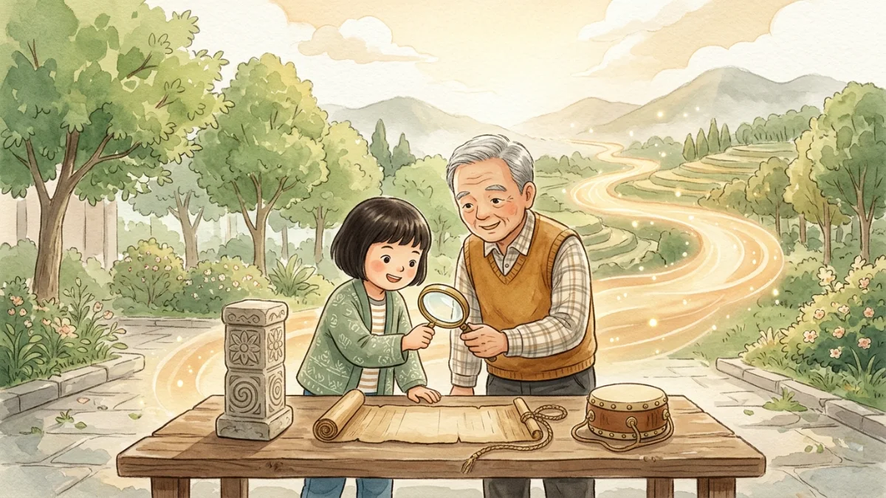
故事館導覽插畫（現代繪畫）：跟著放大鏡，一起分清故事、古物證據跟信仰的界線。
想像寺院門口來了四位客人，每個人都搬出最有分量的靠山，說自己帶來的才是真的佛法。如果你是守門人，誰的話可以不用查就直接點頭？
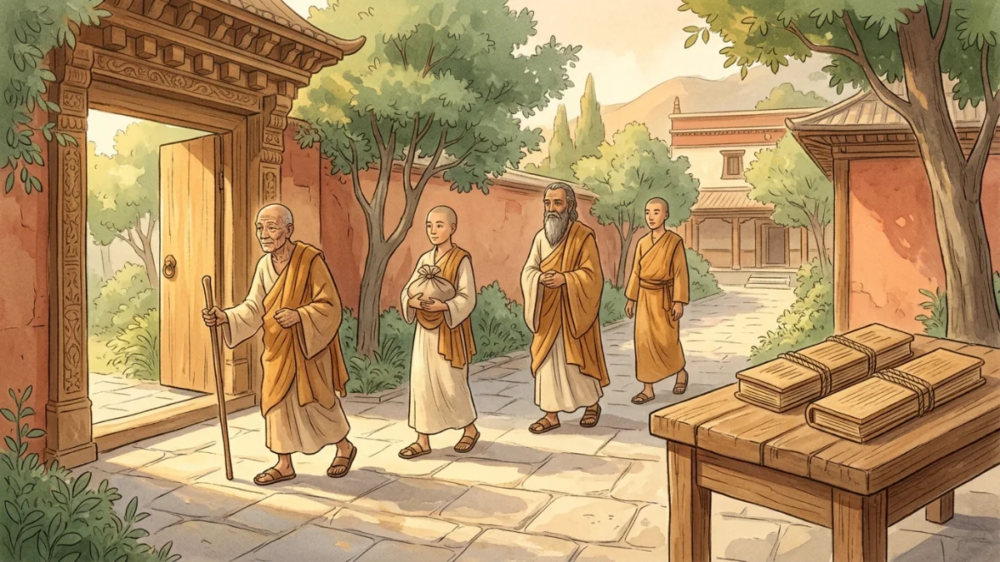
第一位客人開口：「我在佛陀面前親耳聽到這段話！」
已經盤問過的來客：0／4 位（四位裡面沒有半個可以跳過比對！）
故事裡既不叫人「誰大聲就聽誰」，也不鼓勵「沒聽清楚就亂罵人」。不管對方背景多大，先把每句話記下來，拿去跟大家公認的經典教導和生活規範（佛家稱為「經」與「律」）比對：合得上就收下，合不上就不急著採用。
也要注意的細節：有另一部經典雖然中文也譯成同一個標題《四大》，裡頭講的卻是「從東南西北四個方向來的出家人」怎麼核對經文跟意思，和這四位客人的故事並不一樣。
📖 這段故事從哪裡來？取材自記載佛陀晚年遊行的高古經典（如《大般涅槃經》與《遊行經》等早期版本）。
看佛經原文與各版本比對 →| 流傳的版本 | 叫大家拿什麼出來對照 | 歷史學者怎麼看這點差別 |
|---|---|---|
| 南傳《大般涅槃經》等 | 經（核心教導）、律（生活規則） | 學者討論當時的「經」，可能還不是今天這樣厚厚一整套，而是早期已經整理好的重點摘要。 |
| 漢譯《長阿含・遊行經》 | 諸經、律、法三樣一起核對 | 漢譯本多寫了一項「依法」，看得出早期口傳跟翻譯過程中有些微差異。 |
| 漢譯《增壹阿含經》同名故事 | 檢查從東南西北四方來的出家人懂不懂經文、道理、用詞與戒行 | 這篇是另一組故事，而且提到「阿毘曇」，看得出有後來進一步分類整理的痕跡。 |
| 中亞吐魯番古梵文殘卷 | 對照經典、戒律與法理，明確講「靠經，不靠某個人」 | 更直接點出標準是在道理與文本，而不是崇拜哪位說話者的名氣。 |
木匠桌上放著一面相傳幾百年的大木鼓，上面已經裂開一條縫。流傳了兩種截然不同的修補故事：一種一直塞進新木片，另一種改用牛皮繃起來。動手修修看，最後還認得出原本的鼓嗎？
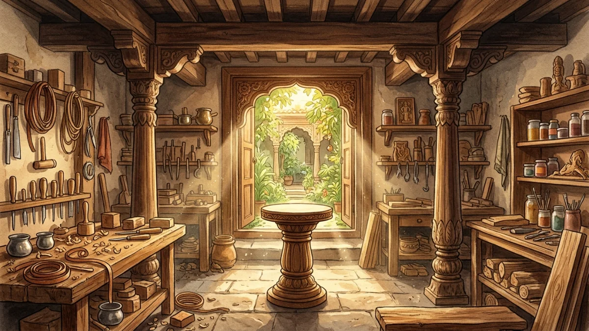
故事 A（一直補新木頭）：鼓身裂掉就打進新木片，慢慢把原木全換光了。
還沒有動手修補，原木鼓身看得到一條裂痕。
提醒：五塊木片與音效是為了幫助想像的示範，不代表古經寫的真實次數；兩個古老故事各有各的畫面，誰也沒有辦法取代誰。
故事 A 擔心後人看不起樸素深刻的核心道理、只愛聽華麗好聽的新詩詞，最後整面鼓只剩新塞進去的木頭；故事 B 說原本鼓聲能傳幾十里，改用牛皮繃緊之後再也敲不出好聽的聲音，最後牛皮碎掉、只剩零散木片。這剛好告訴我們：沒有哪一個單獨版本能自稱完全沒變過。
📖 這段故事從哪裡來？取材自巴利文《相應部》與漢譯《雜阿含經》保存的同源「古鼓譬喻」。
看兩個古本的原文差別 →寫木鼓框裂開後每次都塞進一塊新木頭，最後原本的木頭全部不見，只剩下補丁聚在一起。經裡以此提醒不要放著深奧道理不學，反而一直去寫好聽的文章。
寫大鼓本來聲音洪亮可傳很遠，破裂後改用牛皮繞著綁起來補，結果再也聽不到從前那麼美妙的聲音，後來牛皮全爛掉只剩堆成堆的舊木片。
學者（如現代比對研究者 Bhikkhu Sujato）指出，今天沒辦法斷定哪一個版本一定比較早，也不能拿這個故事亂貼標籤指責某個現代宗派都是假的。
有人自稱已經看透人生、完全沒有煩惱，可是我們又沒辦法打開他的腦袋看裡面在想什麼。佛經居然說：就算遇到有名的老師（甚至佛陀自己），也可以用眼睛看、耳朵聽來慢慢觀察！
📅 第一頁｜剛認識前兩週
👀 看得到的：每天穿很樸素、說話輕聲細語。
❓ 還看不到的：沒看過他生氣、遇到錢或被人批評會怎麼樣。
「才相處兩個禮拜，課講得很順，可是他平常真的都這樣嗎？」
先試著選一個時間點，再點下面你的判斷！
古代故事提醒大家四件事：看他說話跟做事有沒有藏私生氣、看的時間有沒有拉長、看他成名拿到很多好處後有沒有變驕傲，還有用看得到的行為去推測他是不是真的不想害人——而不是憑感覺猜人家心裡有沒有神通。看資料還不夠時，老實說「我還不能確定」就是最聰明的做法。
📖 這段故事從哪裡來？取材自《中部・思察經》與漢譯《中阿含經・求解經》（兩個早期版本都寫過這個故事）。
看佛經原文與學者說明 →點選上面任一個選項看看結果。
一群不同門派的老師輪流來到村口大樹下，每個人都誇自己最厲害、批評別人都在亂講。鎮上的居民聽得頭昏眼花——如果你也在現場，要靠什麼才能知道哪條路真的不害人？
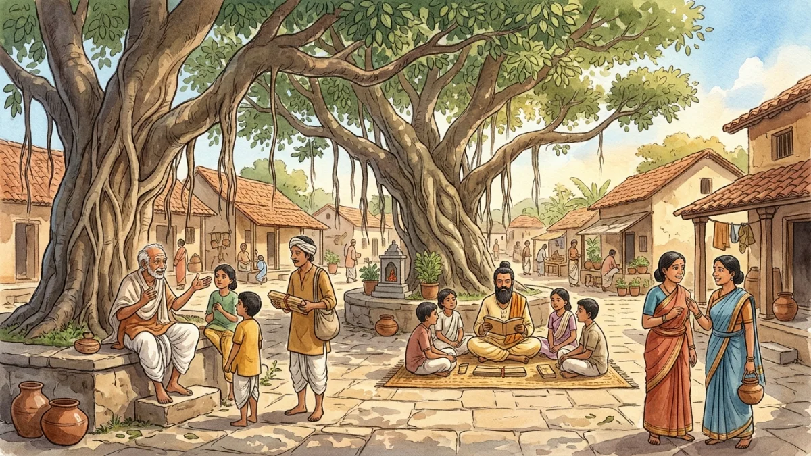
村口阿伯笑著說：「我們從祖父那時候就是這樣一直講下來的，還能錯嗎？」
來看村裡普通人阿明的故事：他平常幫忙鄰居提菜、不亂佔人便宜，盡量用寬厚不傷人的心對待身邊的人。切換下面四種假設，看阿明的人生在哪一個世界吃虧？
假設世界 1／4｜假如有下輩子，好壞也有報應
🌤️ 眼前生活：街坊喜歡他，他每天睡得安穩。
🚶 未來路徑：照這個世界的假設，不傷人的人走到未來也會走向好地方。
世界 1：如果真的有死後世界和善惡報應，阿明因為平常不害人、心裡善良，死後也能安心。（這是故事裡推想的安慰，並不是用動畫證明真有來世喔！）
誠實小提醒：好心不害人並不保證人這輩子永遠不會生病、遇到意外或被壞人欺負；重點是至少自己的心裡踏實、問心無愧。
故事後段馬上反過來問：如果某種想法讓你更愛貪便宜、更容易發脾氣、越變越糊塗，甚至去傷害別人，那就不該跟著做；反過來，如果讓你少一點貪念與敵意、好好待人、明理的人也會點頭肯定，那才值得去行。經裡還特別講到用親切、同情、歡喜別人好與平靜不偏心對待世界。
這套「十個不能只靠單一理由」和「四個假設」，主要保存在南傳巴利文的《增支部》第 3.65《伽藍經》裡；中國漢譯保存的較早版本《中阿含》第 16 經《伽藍經》，並沒有寫那十條清單也沒有這四個假設，而是直接切入討論怎麼放下貪心、生氣、糊塗，去修習對人友善寬闊的心（慈悲喜捨）。所以講到十條清單時，要老實說這是巴利本的內容！
（展開可查巴利本十條詳細名單：口傳、師徒傳承、傳聞、經典寫本、邏輯推理、推論、想像思考通順、符合自己原想法、講者看似有才華、尊敬自己老師。）
📖 這段故事從哪裡來？取材自南亞古老佛經《伽藍經》（巴利文《增支部》與漢譯《中阿含經》版本各有不同寫法）。
看兩版本佛經原文與學者考證 →佛陀去看年輕的兒子羅睺羅，洗完腳後沒有馬上講大道理，而是用手邊的洗腳盆、國王的戰象，還有每天照臉用的銅鏡，演了三段一看就懂的生活故事。
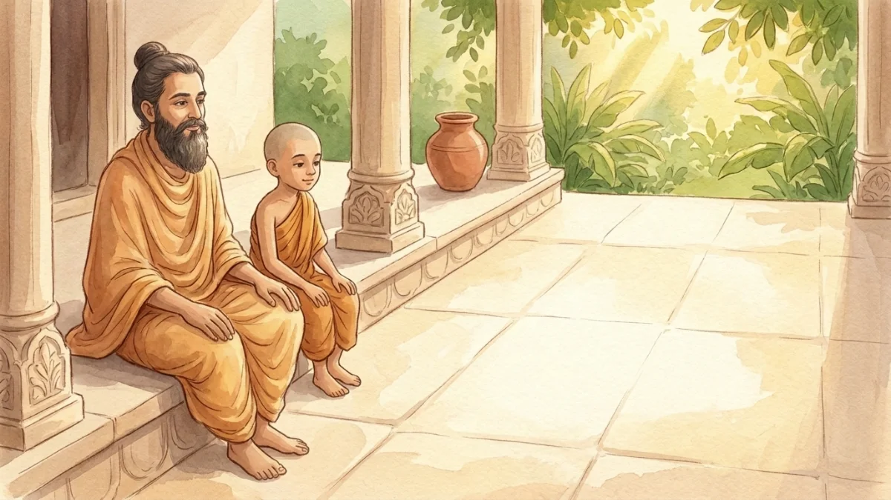
銅盆剛洗完腳、裡面還裝滿水。請照故事順序點點看下面的按鈕！
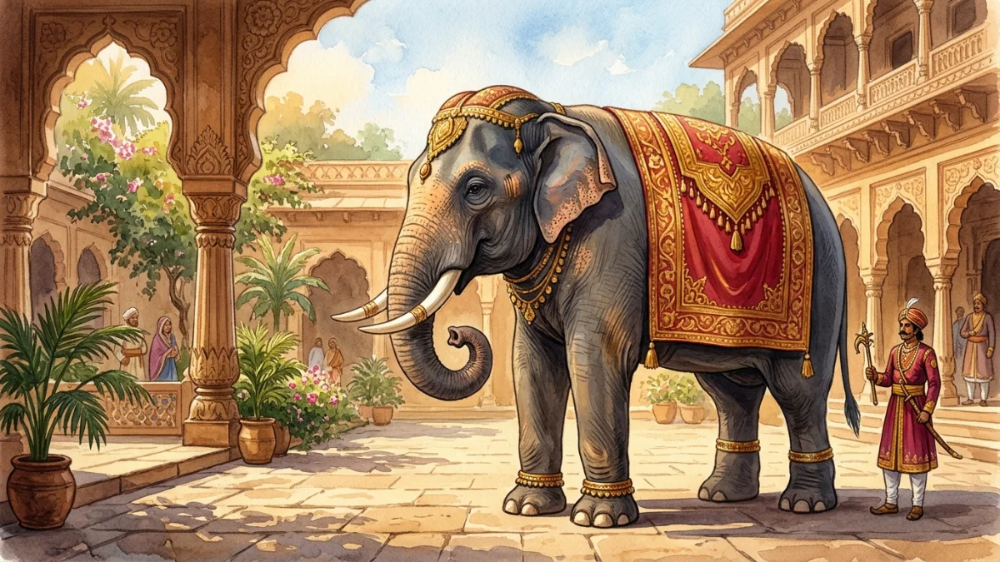
古印度國王的戰象身高體壯，前面走著四條粗壯像柱子的腿、有堅硬的象牙和大耳朵——但牠最寶貝的其實是敏感又不能受傷的長鼻子。
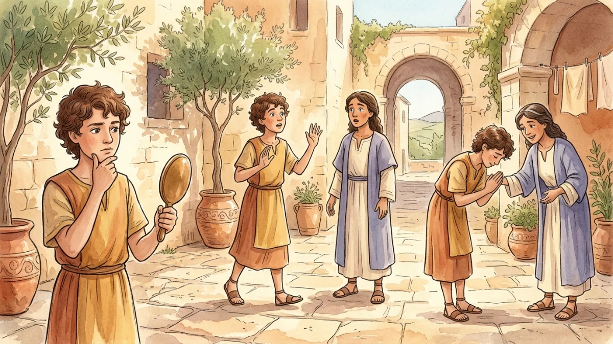
【做之前想一想】小安差點把同學的糗事發到班群，拿起銅鏡想了一秒：「這句話發出去會害別人受傷嗎？」想通了就決定先不講，省下一場傷害。
📖 這段故事從哪裡來？取材自印度佛教最早期的教誡經典（南傳《教誡羅睺羅庵婆羅經》與漢譯《羅云經》）；而且公元前三世紀的阿育王石刻也真的點名推薦這篇！
看石刻實物與佛經原文 →如果你不小心轉傳了一條錯的消息，按故事裡的做法就是「做完發現出錯，坦白說清楚並改正，避免害別人再錯」，而不是偷偷刪掉就裝沒事。直接跳到第 08 關看拜拉特石刻真跡照片 →
摩訶波闍波提（照顧佛陀長大的姨母）想找一句簡單又好記的準則，方便每天檢查自己的生活。下面兩條鄉間小路，讓你一眼看出差別。
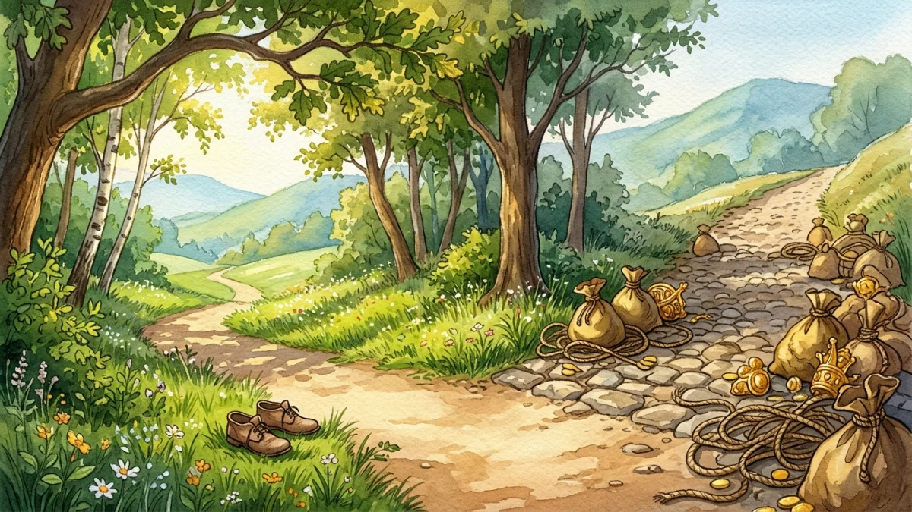
【不藏私分享正確知識】這條路讓人越走越輕快：不需要拼命佔有、炫耀或綁住別人，心裡更安定。
故事裡教人看八個生活方向：有沒有更少貪心、更少受困、更知足、更好相處、不要懶散也不要給別人帶來沉重負擔。但注意兩件事：第一，普通人認真上班養家完全沒問題；第二，你不能只靠別人穿得多樸素就說他一定好，更不能用這八點去推論哪部經典一定出自古代！
📖 這段故事從哪裡來？取材自早期經律兩部文獻裡給姨母的簡要教導（《增支部》與律藏故事）。
看原文八項條目與研究頁說明 →| ✓ 越走越輕快的方向 | × 越走越累的方向 |
|---|---|
| 放下過多貪求 | 越來越想抓緊佔有 |
| 解開不必要的綁手綁腳 | 越綁越死 |
| 減少囤積負擔 | 什麼都想塞滿口袋 |
| 慾望慢慢變少 | 想要越多越大 |
| 容易感到夠了、知足 | 永遠覺得不夠 |
| 喜歡安靜清爽 | 成天泡在吵鬧是非裡 |
| 願意花精神踏實練習 | 一直拖延懶散 |
| 好照顧、不給別人添大麻煩 | 很難伺候、一直要資源 |
有一部古老經典坦白說：靠「信仰」「剛好喜歡」「大家傳下來」「自己想通」這五件事，就算你超級誠懇，結論還是有可能講錯！那該怎麼老實看待自己手上的故事？
放「目前找無公開證據、屬於個人信仰」的想法
放「有石碑、檔案或實證支撐」的事實
放「古書沒記或還在爭議，先留著等新線索」的問題
卡片 1：「聽說某位師父會神通，能算準下次樂透頭獎號碼。」
選卡片再選抽屜，看哪一個抽屜拉開亮燈！
經裡把這第一步叫做「保護真實」：老實說「這是我現在的信念」，不要還沒查證就大喊「只有我對，其他人都笨蛋」。之後若真的找到新證據（像卡片 4 那樣），還可以隨時把卡片換進更確定的抽屜！
📖 這段故事從哪裡來？取材自巴利文《中部・商伽經》對「守護真實」三階段的清楚區分。
看佛經原文與學者考證 →| 容易講過頭的話 | 比較實在的講法 |
|---|---|
| 佛陀一定親口講過這句！ | 某幾部古老佛經裡有這樣記。 |
| 兩千年來絕對沒變過！ | 照目前找得到的早年寫本看來是這樣。 |
| 他一定已經完全開悟！ | 看得出他言行滿一致的，至於內心全貌我測不到。 |
| 照我信的方法做一定有效！ | 在某種情況下看到對某些人有幫助，但仍有條件限制。 |
如果不要只靠後人說的故事，世界上到底找不找得到真的摸得著、能測年代的佛教古董？有！兩件最重要的寶貝是兩千兩百多年前阿育王刻在石頭上的字，還有約兩千年前寫在樹皮上的古卷。

照片暫時載入不到（可能是目前沒有連網）。
您可以回到有網路時重開，或點下方來源連結直接看各地博物館官方收藏。
先自己看圖找線索：石頭表面刻了五排整齊的古代文字，從上往下數第二排右邊，看得出「釋迦牟尼佛」的古老寫法。
放大提示：點下面「放大細節 ＋」到 140%–180%，看第二排右半段的石刻筆畫。
上面刻了什麼意思？國王登基第二十年親自來這裡禮敬，寫說因為「釋迦牟尼佛生在這個村子」，所以立柱紀念，並減免村裡稅金剩八分之一。
來源與限度：1896 年老檔案照片（已無版權限制）。證明公元前三世紀人們已認定這裡是佛陀誕生地，但沒有證明生在哪一年或出生走七步的神話。
目前大小：100%

1896 年考古隊拍到的石柱全景。它證實國王特地來立柱紀念釋迦牟尼出生地；至於這根柱子為什麼被後世埋進土裡又挖出來，那又是另一段考古大發現。

大英圖書館收藏的樹皮捲軸（約西元一世紀），寫著很早期的經典；美國國會圖書館也有類似藏品（網站防機器人擋住自動連線，想看高清原圖請直接到 國會圖書館官方頁面 ↗）。
📖 這些古物研究從哪裡來？來自孔雀王朝阿育王石刻實物報告與大英圖書館／雪梨大學犍陀羅寫本測年計畫。
看四座石刻＋古寫本完整考證 →提醒一件事：斯里蘭卡流傳故事說前 1 世紀就用棕櫚葉寫下了全部巴利三藏，但那批前 1 世紀的原本早已不見，這件事也是幾百年後的編年史寫的。目前人類真的拿得到手裡測年、還看得到字的實物，最早就是這些比阿育王更晚一兩百年左右的樺樹皮古卷！
| 石頭刻字 | 這塊石頭真的有講的事 | 不能多猜的範圍 |
|---|---|---|
| 藍毘尼石柱 | 西元前三世紀國王認定這裡是佛陀誕生聖地。 | 沒寫誕生那年是哪一年，也沒有寫走七步神話。 |
| 拜拉特石刻 | 國王挑了七段教導推薦大家多讀（包含第 05 關對羅睺羅的故事）。 | 不證明當時整本巴利大藏經已一字不改定案。 |
| 禁止分裂石柱 | 當時國王親自下令管理出家人的團體秩序。 | 不能單獨證明後代歷史書記載的第三次結集所有開會細節。 |
| 尼迦利石柱 | 當時人們已經在拜過去出現過的佛陀（拘那含佛）與佛塔。 | 不證明過去幾位古佛的神話傳記當真在歷史上發生過。 |
佛陀過世後好幾百年都沒有寫成書，全靠一屆一屆用嘴巴背給下一屆聽！這是不是像派對上「耳語傳話」一樣越傳越歪？點進來看看四種完全不一樣的傳法結果！
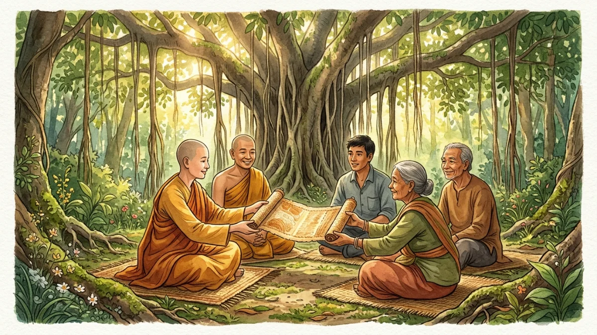
「這句教導很重要」
點下方選傳遞方式
結果會出現在這裡
點選上面四個按鈕，就能看出「集體背書很穩」和「細節還是會慢慢多出來」為什麼會同時發生！
一方面，研究口傳的學者（如 Alexander Wynne）發現，古代出家人其實很像音樂合唱團一樣定期集體對詞、互相盯著有沒有背漏，所以核心骨幹滿穩的。另一方面，比較巴利文跟中文版本的學者也發現，很多重複的排比句型、翻譯改寫和後來補充的分類還是默默加了進去——所以背得整整齊齊，不等於那段就是最早的原本！
📖 這段研究從哪裡來？整合古代佛教口傳記憶機制與巴利漢譯對讀研究。
看口傳研究論文與對讀細節 →另外記住一個道理：如果古代十個流派裡有八個在戰爭裡消失了，只剩兩個活到今天，我們不能因為今天只看到這兩個，就以為兩千年前原本只有這兩家（學者稱這種看不見死角叫「存活者偏差」）。
| 影響原因 | 可能讓後來的人看到什麼變化 |
|---|---|
| 口耳傳很久 | 容易掉字、記錯，或是用好背的固定模板越補越長 |
| 換成別的語言文字 | 原本的意思被借用新語言的習慣來理解 |
| 不同派別彼此競爭 | 各自加上支持自己的故事；輸掉或消失的派別，只剩別人在罵他的紀錄 |
| 國王跟官府介入 | 挑自己喜歡的保存，把不喜歡的刪掉或改寫 |
| 打仗與災禍 | 廟宇被燒，住那裡的人跟書一起不見 |
| 寺廟要吃飯活下去 | 祈福、超度與喪禮儀式越加越多 |
| 入境隨俗當地文化 | 吸收當地的神明、家庭觀念與過節習慣 |
| 男女與階級觀念 | 規矩受到當地社會風俗影響 |
| 立祖師品牌講正統 | 替早年歷史補寫清楚的「第一代傳到第幾代」名單 |
| 後人抄寫不小心或熱心 | 旁邊的讀書筆記不小心被下個抄書人抄進正文裡 |
| 近代碰上科學跟殖民 | 被重新包裝成「心靈科學」或「減壓生活哲學」 |
佛教從北印度出發後，並沒有像一條直線那樣照順序慢慢傳開，而是同一時期在不同地方各自長出不一樣的樣子！拉動時間軸或按播放，看這張真實亞洲海岸線地圖上的各個城市怎麼依時代一一亮起來。
真找得到什麼？確定有位喬達摩在北印度教導大家離苦的方法；但具體生平細節跟過世那一年，現在還是只能抓個大約範圍。
第一，這張底圖用的是現代全球真實海岸線資料（Natural Earth），不代表兩千年前古代的國界或海岸完全長這樣；第二，地圖上那幾條虛線走廊，代表的是考古與史料看得到的多方交流方向，並不表示每一小段路程都有寫進死板的時間表。
📖 這份年代與歷史評估從哪裡來？整合歷史佛陀研究與十二個時期、四次大集會的史料比對。
看歷史佛陀生平證據與結集考證 →| 常聽到的說法 | 現在找到的證據夠嗎 |
|---|---|
| 確實有位叫喬達摩的修行老師 | 高 |
| 活動在北印度和今天尼泊爾南邊 | 高 |
| 建立出家人團體教大家脫離痛苦 | 高 |
| 出身有一定地位的釋迦族 | 中高 |
| 像現代想像的豪華王國王子 | 中低（可能有後人寫得更戲劇化） |
| 29歲出家、35歲覺悟、80歲過世 | 傳統說法，沒辦法找到當年官方出生證明 |
| 出生馬上走七步講話 | 找不到歷史證據 |
| 樹下遇到魔王與各種神通奇蹟 | 歷史研究沒辦法檢驗這種故事 |
| 後代佛陀傳記寫的每句對白都是真錄音 | 不能當成一字不差的錄音記錄 |
大家常問：到底南傳、漢傳還是藏傳才是最原味的那一家？其實早期很多條河流本來就有來往分流——試著點按把不同傳承的資料放進拼圖盤，看哪些拼得起來、哪些就是各走各的！
苦與脫苦方法・無常會變・沒有不變的真我・減輕貪瞋癡
點下面切換南傳、漢傳或藏傳，看這格怎麼變！
每條河流都有自己數百年的文化融合
南傳保存了一整套完整的巴利語早期經律，但中間也經歷過十二世紀國王整理、十八世紀從外國請僧人重新傳戒，並不是兩千多年一動也不動。
【巴利語本（完整對讀）】講身體不是永遠不變的我：「這不是我的，這不是我，這不是我的真我。」
每一個活到今天的佛教傳統都既保存了一部分很早期的核心想法，也都經歷過中斷、王室整理、當地習俗融合跟後世註解。最聰明的讀法，是拿幾種版本互相對照，而不是盲目喊哪一派唯一正統！
📖 這段跨派別比較從哪裡來？取材自跨語文早期《無我相經》《轉法輪經》比對及近代部派歷史研究。
看七大古部派與十大交叉比較表 →| 比較項目 | 南傳上座部 | 漢傳佛教 | 藏傳佛教 |
|---|---|---|---|
| 早年經典保存 | 完整巴利經藏 | 保存重要阿含經等早年翻譯 | 保存部分早年經律與印度古籍 |
| 出家戒規來源 | 上座部律 | 法藏部《四分律》 | 根本說一切有部律 |
| 後來哲學開展 | 論典與義註系統 | 中觀、唯識、天台、華嚴、禪宗 | 中觀、因明、密教論辯系統 |
| 融合當地文化 | 南亞與東南亞習俗 | 儒家孝道、道家等 | 西藏及喜馬拉雅文化 |
| 經歷政治插手 | 王權整理、殖民改革 | 皇帝支持或滅佛 | 王室支持與政教制度 |
| 傳承曾中斷重建 | 有 | 有 | 有 |
| 能單獨證明「全數原汁原味」？ | 沒辦法 | 沒辦法 | 沒辦法 |
今天說起南傳佛教，大家都想到斯里蘭卡跟緬甸、泰國。但在古代斯里蘭卡，其實曾同時住著三大彼此不同的寺院中心；到了十八世紀，島上的比丘傳承一度快要斷光，甚至要靠船隻從泰國接送法師來重新接棒！
【大寺派】五世紀時在這裡把古老巴利三藏跟詳細註解整理下來；十二世紀國王下令把三座大寺院統一起來，才定出今天南傳的主要系統。

當年規模龐大、也願意接納大乘思想，十二世紀整合後獨立系統消失（今天看到的磚塔含近代修復）。
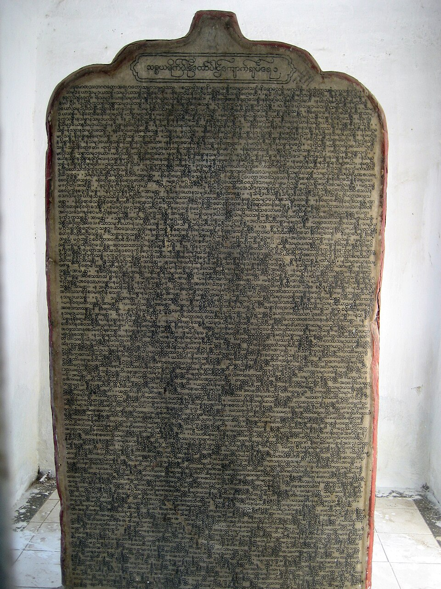
十九世紀緬甸國王為保存佛經免遭殖民戰亂失傳，刻成整整 729 塊大理石經碑（另外還有 1 塊記錄建碑經過的紀念碑）。
📖 這段歷史從哪裡來？取材自斯里蘭卡寺院考古與十八、十九世紀南傳教團重組史料。
看南傳三寺與 729 碑完整研究 →很多人曾經好奇：大乘佛教到底是「在家人造反創出來的新宗派」，還是後來的人把早期已經有的種子慢慢澆水養大的？兩千年前的古寫本跟近代研究給了一個很不一樣的答案。
早在各派都有的古經裡，就能看到對一切眾生溫柔、想離苦的心。
西元前後，在寺院裡寫作抄經的出家人把想法越發展越豐富（虛線＝很多條流派交錯，不是一條死板家譜）。
「對大家友善不害人（慈悲）」：這顆種子最早在跨傳承古書裡就已經有了！
【歷史學問法】問的是公元前五世紀喬達摩有沒有親口說過這些成套理論。照歷史手邊看得到的證據，成熟的系統大多是數百年後才慢慢形成的。
第一，科學測年約西元 75 年左右的古樹皮經卷（在今天阿富汗／巴基斯坦北部一帶出土）證明，早期大乘經典確實在印度文化圈寫出來，不是中國人憑空編出來的。第二，近年研究也推翻了「大乘是普通在家信徒反抗出家人」的舊說——寫作跟保護這些早期經卷的，很多本身就是在傳統大寺院裡苦修打坐的出家人。
📖 這段發現從哪裡來？取材自近年古寫本碳十四斷代與大乘起源學術研究。
看寫本測年範圍與學者論文 →| 概念 | 跟早年古書的關係 |
|---|---|
| 慈悲 | 早年古書本來就有 |
| 菩薩 | 早年主要指佛陀還沒覺悟前的稱呼；大乘把它擴展成每個人都可以發願走的路 |
| 空性 | 跟早年講的「無常、無我、彼此依賴而生」有關係，後來哲學分析變得很細 |
| 六波羅蜜 | 布施、守規矩、忍耐等早年都有，六項排成一套是以後的整理 |
| 十方有很多佛的世界 | 有早年線索，後來大大發揮想像與描寫 |
| 西方極樂淨土 | 屬於後來發展成熟的淨土信仰系統 |
| 人人都有佛性 | 較後期在印度開展的重要大乘思想 |
| 唯識哲學 | 約西元四、五世紀慢慢整理出來的細膩心理哲學 |
| 三身佛說法 | 後世哲學思考「佛陀到底是哪一種存在」的理論發展 |
挑一本流傳下來的佛經，抽一張檔案線索出來看看——連古代中國的出家學者自己也早就編過書，專門區分哪些確實來自印度、哪些是在中國文化裡寫成、哪些還要打問號！
這一大段裡面找不到「觀自在菩薩行深…度一切苦厄」這幾句開頭。
寫作「觀世音菩薩…照見五陰空，度一切苦厄」（有學者懷疑這版其實較晚才寫上舊翻譯家的名字）。
寫作「觀自在菩薩…照見五蘊皆空，度一切苦厄」。
通行梵文原本沒有「度一切苦厄」這一句！目前只有在另一部漢譯經典裡看得到類似話，表示《心經》開頭不像整段直接照現存梵文翻譯。
【先在中國整理再回譯的看法】有研究者對字句發現《心經》中段跟早兩百多年翻譯的《大品般若經》幾乎一樣，連古文裡一處特別的詞「以無所得故」轉成梵文時也留下一樣的小疙瘩（Attwood 2020 完整論文看得出這些文字證據；另兩篇 1992 與 2021 詳細論文因網站防抓取或付費牆還沒拿到全本核對）。另外要分開：有些學者覺得這只是當時常見的重點摘錄，另一位學者個人則推論部分舊本可能屬故意托名——這點學者間還在吵，沒有定論！
第一，就算是在中國文化裡長出來的經典（像講孝順的《父母恩重經》或《大乘起信論》），很多也是為了在當地弘法而用心整理的哲學與宗教作品，不全是惡意詐騙；第二，中國正牌佛典大資料庫也有說明：「有收進資料庫，不等於替每部書保證它一定出於古代印度」！
📖 想看原始古書位置與各家論文詳細清單？這裡有完整的經典編碼、頁數對讀及我們已讀與還沒拿到的文獻說明。
看《心經》《楞嚴經》與十六部經典學術考證 →早年印度的出家人不跟家裡同住、也不能自己種田、沿門托缽別人供養什麼就吃什麼。可是走進傳統中國鄉村後，大家突然問他：「你不結婚生小孩算不孝順吧？又不下田怎麼過日子？」看生活習慣怎麼一點一點變出今天的樣子！
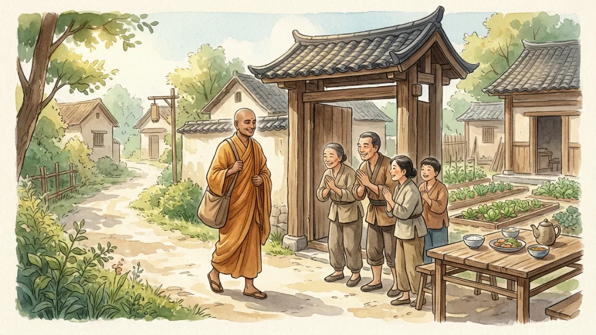
【孝親與家族】其實最早的印度古經早就非常看重照顧爸爸媽媽；但面對中國「無後為大」的壓力，後來發展出了「出家修好幫助全家人」「盂蘭盆追思祖先」這些接地氣的說法與法會。
早期印度戒律禁止吃人、象、馬、狗、蛇等十種特定動物的肉，但只要符合「沒看到為你殺、沒聽到為你殺、也不懷疑專門為你殺」的三個條件，托缽得到什麼就吃什麼。後來到了中國，大乘經典更強調完全不吃肉、加上六世紀梁武帝大力推行，經歷好幾百年到了大約十世紀，才定型成漢傳僧侶全面吃全素的規矩——所以不能因為南傳法師照古戒接受三淨肉，就罵人家破戒！
📖 這段生活史研究從哪裡來？取材自早期《善生經》《耆婆經》對照與中國佛教素食及寺院經濟史研究。
看古戒原文與素食演變研究 →大家最常聽到禪宗故事說：「佛陀在靈山大會拿起一朵花一句話也沒說，只有迦葉尊者看懂而微笑！」可是這段故事，在佛陀之後的前面一千多年間的古老經典裡，怎麼都翻不到……打開這排古代書籍一本本找找看！
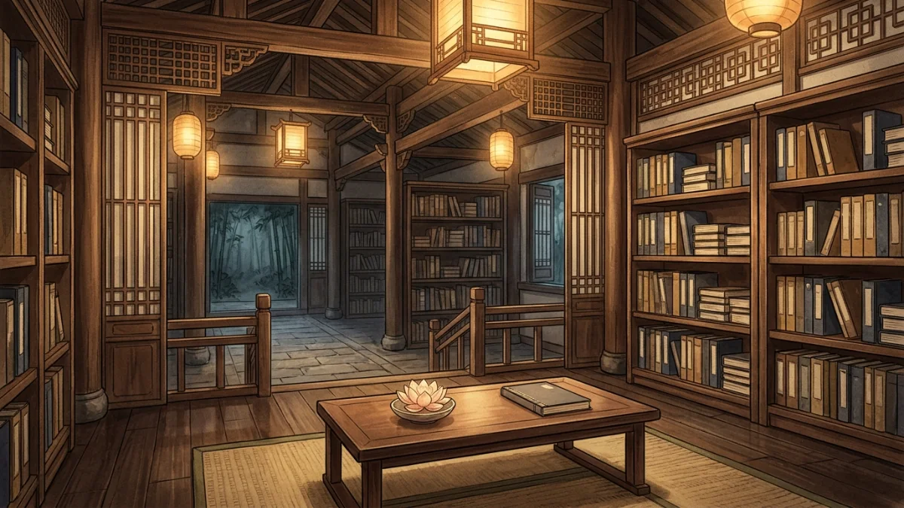
【早年大藏經與唐代敦煌手抄本】沒有記「佛陀拿一朵花、迦葉微笑」的故事；這時期的寫本看得出文字比較單純，跟後來印刷的厚版書差很多。

這是法國國家圖書館收藏的1310年木刻版（已經經過後世好幾次加長改寫），不能當成唐朝敦煌手抄本替身！大英圖書館有真正的敦煌古卷，因網站防機器人無法直接放圖，請點此親自觀看：大英圖書館敦煌古卷網頁 ↗
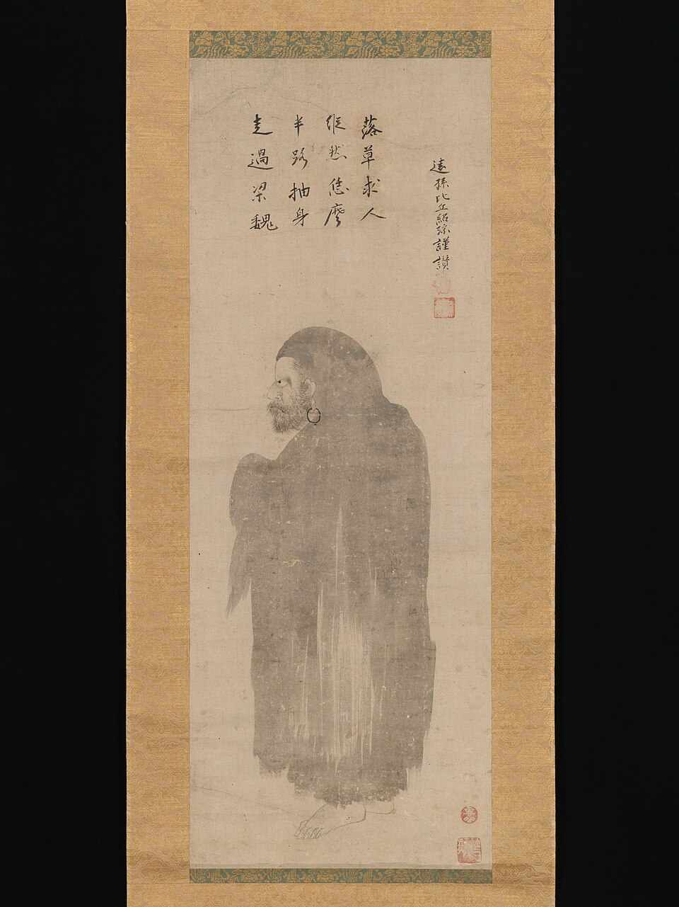
紐約大都會博物館收藏的水墨畫。它畫在達摩過世將近一千年之後，是藝術想像，不是達摩真人的長相照片！
雖然歷史學者發現「二十八位祖師一一交接」「拈花微笑」是唐宋時代才慢慢整理定型的傳承故事，不是佛陀當場的文字記錄；但作為一種「不需要靠講一大堆話、用心領會」的哲學比喻，它在中國跟東亞藝術與生活思考裡仍然很有力量。
📖 這段文獻追查從哪裡來？取材自近現代禪學史對敦煌寫本與宋代燈錄成書年代的比對研究。
看燈錄年表、學者研究與限度說明 →佛教走過全世界海拔最高的雪山來到西藏，留下極多連印度本國都已經燒光失傳的寶貴大經！同時也流傳著「埋在土裡的古代書卷」「活佛轉世」等大家超好奇的說法。哪些在歷史檔案裡看得到、哪些屬於個人宗教信仰？放進三個木箱試試看！
找得到同時期石碑或翻譯對照
教內自有傳統講法，但外部還難確定
講前世今生心識延續，非科學或考古範圍
「西元八世紀後期赤松德贊國王支持建立了桑耶寺，石碑也還留在現場。」
選一件事情再放進箱子裡看看結果！

最早約在西元 779 年由吐蕃王室建立（現存建築經過歷代多次重建），見證密教與印度論書正式傳入西藏的歷史起點；注意研究密宗的學者也提醒大家，不能把中世紀繁複的宗教符號隨便看成「邪門巫術」，而要放回當年大學校寺院文化中去讀。
📖 這段西藏歷史研究從哪裡來？取材自西藏史料與學者對密續符號及早期苯教互動的研究。
看桑耶寺史料、薩迦班智達討論與金瓶掣籤考證 →紙和樹皮很怕火、怕水、怕戰亂，大寺院又需要大量糧食、土地跟國王保護才能專心抄書。勾選下面的歷史事件，親自看看古代四個大藏書庫發生了什麼巨變！
樹皮與棕櫚葉寫本
戰火摧毀風險椰葉書寫與整理
看條件變化皇帝挑出來木刻印刷＋石經
挑進書目的留存封進沙漠與帶到海外
看條件變化
曾經容納數千名學者的古老大學寺。考古學家 Lars Fogelin 指出，北部佛教後來衰退並不只是「外來軍隊打進來」單一原因，還包含王室贊助換別家、大地主寺院跟平常百姓漸漸脫節等七種力量交織！

即使在北印大寺院倒下之後，東印度與邊緣地區其實還有一些小社群繼續留下來一陣子，並沒有一夕之間全部歸零。
📖 這段歷史研究從哪裡來？取材自北宋木刻大藏經印刷史與考古學者對北印佛教衰退的研究。
看十一個關鍵大事件＋七項衰退原因清單 →很多台灣觀光客去日本寺廟玩都會嚇一跳：那裡的住持竟然有太太小孩，甚至由兒子接著管這間廟！是不是日本佛教隨便改壞了古規矩？轉動時光門，看三個完全不同的年代怎麼走過來的。
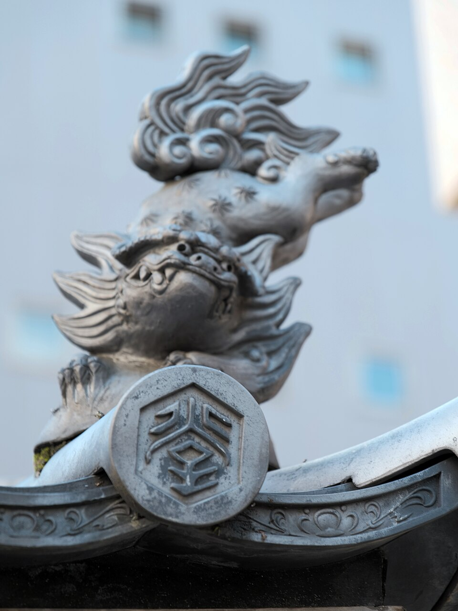
京都六角堂親鸞堂屋瓦實景
⏳ 時代一｜兩千多年前古印度
古印度出家人的理想是離開自己原本的家、不結婚、不靠血緣把廟傳給親生兒子，跟國王保持一點獨立距離。
第一，早在明治時代數百年前，淨土真宗的開創者親鸞就已經公開成家了；而在江戶時代，政府規定每戶人家要向特定廟宇登記戶口（有點像戶政事務所兼辦喪禮）。第二，1872 年政府的法令只是把「和尚結婚吃肉會被抓去罰」的刑罰取消，並沒有強迫每個人都要結婚，當時各宗派也吵得很激烈——今天依然有一些嚴格單身的叢林寺院與尼眾。
📖 這段日本史研究從哪裡來？取材自學者對明治宗教政策與親鸞傳統的歷史專書研究。
看日本與古印度對照詳情與書目 →早年經典明明記載過許多女性出家證悟的故事，但後來斯里蘭卡跟印度失傳了女眾大戒、只剩中國與韓國保存下來，甚至到了五世紀，斯里蘭卡法師還曾坐船到南京傳戒！點接力賽道上的各站看看！
【早年記載與各派規矩】最早的經典記載女性出家一樣能修成大成就；至於要求尼眾從屬男眾的「八條特別規定」，研究各派古律的學者發現不同派別寫得不太一樣，可能有後來慢慢加進來的歷史痕跡。
支持跨派別協力恢復的法師與學者指出：古戒本裡也曾記錄在特殊情況下彈性處理的方法，而且現存東亞法脈當年就是靠斯里蘭卡幫忙接起來的！
📖 這段女性受戒歷史研究從哪裡來？我們兩邊理由都如實擺出來，不替任何宗教領袖投票判定誰才算數。
看各律藏異文、2025不丹人數與研究限制 →很多人說：「佛教其實是減壓心理學，不拜拜也不講鬼神，只靠打坐正念就好！」真的是這樣嗎？而今天在臺灣看到的廟會拜拜、大型佛教醫院、慈善志工跟禪修班，又是怎麼在這一兩百年慢慢長成這樣的？
把佛教講成純哲學或心理學，其實是近一百多年亞洲改革者面對西方科學跟殖民衝擊時，重新找出來的介紹方式——早年古書裡照樣有寫到諸天鬼神跟脫離生死的宗教追求。
【清代到近代早期】觀音菩薩、祖先祭祀跟地方神明常常同在一座廟裡（看下面約百年前的艋舺龍山寺老照片！）。

見證早期臺灣佛教與觀音、民間習俗交融的模樣。
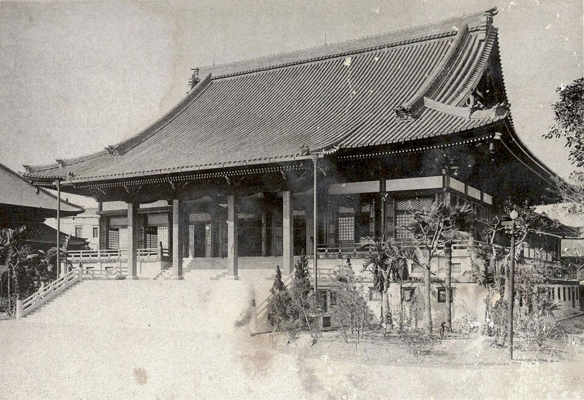
見證日治時期日本宗派傳進臺灣與近代佛學教育興起。
呈現戰後臺灣「人間佛教」走向公共社會的大規模機構實景（非 1945 年代初期老照片）。

展現當代臺灣佛教投入醫療與慈善服務的樣子（為保護大家隱私，特別拍建築外觀而不拍路人臉孔）。
📖 這段近現代與臺灣史從哪裡來？取材自近現代佛教主義與臺灣佛教歷史專書，並附上禪修心理安全的科學研究提醒（正念減壓不能取代看醫生！）。
看現代正念研究限制與臺灣四期文獻 →逛完兩千五百年的線索，我們不需要全部相信、也不用一竿子打翻說全都假的！這張工作台讓你挑一個常聽到的說法，自己動手用偵探工具查一次——不計分、不上傳資料，純粹是讓你帶走的方法。
選題目後，試著順手點下面七個小確認動作。
目前進度：0／7（只是筆記進度，不是考試分數喔！）
從考古旁證和各地都有的古書核心，整理出的早期減苦思考與品行提醒；當年沒有錄音，只能抓出大方向。
大家一起對詞背經留下骨架，但在印度各地傳開後，不同版本的文字漸漸有些差別。
把早年想法寫成有系統的哲學論書，同時在印度大寺裡長出大乘經典和後來的密續系統（並不是惡意捏造）。
中國朝廷印大藏經、全面吃素、日本後來取消不准和尚結婚的處罰、斯里蘭卡從泰國請僧人重新接續戒脈……歷史實實在在改變過樣貌。
正念課程、人間佛教寺院和醫院志工，讓古老傳統用現代人聽得懂的方式繼續走進生活。
提醒：遇到這些說法不一定代表對方一定是壞人；但只要牽涉叫你掏錢、放棄思考或只聽他一個人時，多花幾倍工夫查清楚是應該的。
📖 想看本站全部 42 組原始典籍書目、研究命題、證據強度與誠實限制？全部整理在專業研究與書目詳頁。
打開完整專業研究頁 →這裡把全館提到的真實古書、博物館照片和研究文章全部列出來；想看學術命題、原文引文與完整書目細節，歡迎點進 專業研究頁書目總表。
目前顯示 42／42 組資料。
兩派都保存的古經 我們直接看過古書或碑文原件
作者或編者：巴利三藏（Mahāsaṅgīti 版）；Bhikkhu Sujato 英譯 · 年代：戰前傳承／現代電子校勘版 · 出處位置：PTS DN 2.123–126 (dn16:4.7–4.11)；PTS AN 2.167–170
面對四種權威轉述者（聲稱親聞佛說、某和合僧團、多位博學長老、一位博學長老），均須「勿遽讚喜、勿遽斥責」，先記清文句，再以『經（sutta）』與『律（vinaya）』兩項比對。
它能幫我們確認：證明巴利傳承明確禁止因說話者權威高低而跳過文本查對，並列明「經、律」二標準。 · 但不能多猜：不證明當時已有今日定型印刷版全套五部尼柯耶，亦不等於歷史佛陀本人逐字原音。
關鍵詞：四大教法、DN 16、AN 4.180、S01、P1
兩派都保存的古經 我們直接看過古書或碑文原件
作者或編者：佛陀耶舍、竺佛念譯（法藏部傳承） · 年代：後秦弘始年間（412–413 CE）漢譯 · 出處位置：T01, no. 1, 17c01–18a22（DA 2）；T01, no. 6 & no. 7
與巴利 DN 16 同列四種權威轉述情境，但查驗標準明確列出「諸經、律、法」三項（較巴利多出「依法」）。
它能幫我們確認：證實法藏部漢譯長阿含共有「不先迷信亦不輕毀、按標準追查」之程序架構及跨部派三項／兩項異文。 · 但不能多猜：不能將漢譯「諸經、律、法」直接回推為巴利原字，或宣稱公元前即已有漢文大藏經。
關鍵詞：四大教法、長阿含、遊行經、DA 2、T0006、T0007、S01、P1
資料來源 我們直接看過古書或碑文原件
作者或編者：瞿曇僧伽提婆譯／整編（所屬部派學界未定） · 年代：東晉（約397–398 CE） · 出處位置：T02, no. 125, 652b13–653a18
不同於巴利 DN 16/AN 4.180 的「四位轉述來源身分」，EA 28.5 以「四大廣演（契經、律、阿毘曇、戒）」為名，分東南西北四方來僧情境，並按「經本 vs. 義理 vs. 文辭（味） vs. 戒行」差異作四種細緻處置，包含列入較晚近三藏分類「阿毘曇」。
它能幫我們確認：確證早期不同傳承對「四大」名稱下的審查對象與歷史層次曾發生顯著結構重編（且將阿毘曇納入準則）。 · 但不能多猜：不可把 EA 28.5 四方來僧程序直接等同為巴利「親聞佛說／僧團／長老」四權威轉述，亦不能以本經「阿毘曇」證明佛陀在世已有論藏定本。
關鍵詞：四大教法、EA 28.5、增壹阿含、阿毘曇、T0125、S01
兩派都保存的古經 我們直接看過古書或碑文原件
作者或編者：Ernst Waldschmidt 校勘刊布（吐魯番梵文寫本，說一切有部系統） · 年代：中亞梵文寫本／Waldschmidt 1950–1951 刊本 · 出處位置：Waldschmidt MPS 24.1–24.13 (SuttaCentral SF 245)
說一切有部梵本在四種轉述前明確提出「當依契經，莫依於人（sūtrāntapratisaraṇair… na pudgalapratisaraṇaiḥ）」，並同時以經、律與「法性（dharmatā，不違諸法本質）」三項檢驗。
它能幫我們確認：顯示西北印度梵文系已有「依經不依人」表述，並在經、律之外加入「不違法性」。 · 但不能多猜：不能把說一切有部梵本句子直接強加為巴利傳承原始讀法或後世大乘四依全文。
關鍵詞：SF 245、梵本、依經不依人、dharmatā、S01
資料來源 我們直接讀完公開的研究全文
作者或編者：巴利律藏 Mahāvagga；Bhikkhu Sujato（2023 討論文章） · 年代：巴利律藏／2023 Sujato · 出處位置：Vinaya Kd 6 (Bhesajjakkhandhaka PTS 1.250–251)；SuttaCentral Discourse Thread 28178
只納入直接完整閱讀的律藏與 Sujato 討論；印順《原始佛教聖典之集成》與 Lamotte（1949）《四依》已分拆至 E04C 獨立評級，絕不混同取得深度。
它能幫我們確認：清晰區分經藏教法審查與律藏開遮判準；呈現當代學者對早期 sutta 詞義的詮釋。 · 但不能多猜：Sujato 討論屬當代個人文獻學詮釋，非全學界定論，亦不能等效替代印順漢文原著。
關鍵詞：律藏、大品、Kd 6、Sujato、S01
現代歷史學者研究 目前只看到圖書館書目，還沒讀到全書
作者或編者：印順法師（1971）；Étienne Lamotte（1949，經學術書目轉引） · 年代：1949 / 1971 · 出處位置：印順《原始佛教聖典之集成》第二章（CBETA Y0033 / mahabodhi.org）；Lamotte (1949), Le Traité / 四依轉引書目
恢復原著正式入口並與 E04B 徹底分離：不用 SuttaCentral 討論區文章替代印順中文原著，亦不把未逐頁查閱的 Lamotte 研究混充為 FULLTEXT_CHECKED。
它能幫我們確認：保留三大「四大／四依」規則歷史分化之書目追溯路徑與中文原著入口。 · 但不能多猜：本站不可自稱已對 Lamotte (1949) 法文全書或印順全書進行逐段校勘，故論述限於章節與名詞區分層級。
關鍵詞：印順、原始佛教聖典之集成、Y0033、Lamotte、四依、S01
兩派都保存的古經 我們直接看過古書或碑文原件
作者或編者：巴利《相應部》；求那跋陀羅譯《雜阿含經》；Bhikkhu Sujato（討論筆記） · 年代：巴利本／宋元嘉年間（435–443 CE）漢譯 · 出處位置：PTS SN 2.266–267 (SN 20.7)；T02, no. 99, 345b01–24 (SA 1258)
兩本以不同修補意象（木楔逐塊替換 vs. 牛皮纏縛失聲剝落）警示教法失真；連這個「警告傳承變質」的故事本身在部派流傳中也產生了版本差異，無法單憑細節斷定哪本更早。
它能幫我們確認：證實「警告失真」母題為早期共有，同時細節本身歷經演化。 · 但不能多猜：不證明存在過真實徹聲四十里神鼓，亦不構成對任一當代宗派的全面否定。
關鍵詞：古鼓、SN 20.7、SA 1258、雜阿含1258、異文、S02
兩派都保存的古經 我們直接看過古書或碑文原件
作者或編者：巴利《中部》（Bodhi 英譯）；僧伽提婆譯《中阿含經》186 · 年代：巴利本／東晉（397–398 CE）漢譯 · 出處位置：PTS MN 1.317–320 (MN 47)；T01, no. 26, 731a29–732a12 (MA 186)
無法直接知道他人內心者，應長期觀察導師身語表現、名利前後是否染著，甚至直接就經義向導師核問，最終在經文語境中建立「有根據的信心（ākāravatī saddhā）」。
它能幫我們確認：建立「不能讀心故須長期眼見耳聞查驗導師言行」的經典根據。 · 但不能多猜：行為無明顯過失不證實導師具全知神通；現代讀者亦須區分宗教信心終點與批判開放保留。
關鍵詞：調查導師、MN 47、MA 186、思察經、求解經、Bodhi、S03
資料來源 我們直接看過古書或碑文原件
作者或編者：巴利《增支部》；僧伽提婆譯《中阿含經》16；Thanissaro 英譯 · 年代：巴利本／東晉（397–398 CE）漢譯 · 出處位置：PTS AN 1.188–193 (AN 3.65)；T01, no. 26, 438b13–439c23 (MA 16)
兩經共同回應多師爭論下如何抉擇，並一致以離貪瞋癡、不傷害他者與四安穩為準則；同時確證十條清單僅存於巴利本，不可硬套漢譯。
它能幫我們確認：破除「伽藍經教人只信感覺、放棄倫理與智者基準」之常見誤讀。 · 但不能多猜：不證明「來世果報」已由現代科學驗證；十條清單出現先後尚無定論。
關鍵詞：伽藍經、AN 3.65、MA 16、四種安穩、S04
現代歷史學者研究 我們直接讀完公開的研究全文
作者或編者：Bhikkhu Bodhi (菩提比丘) · 年代：1988 · 出處位置：Buddhist Publication Society Looking at the Kalama Sutta (kalama.essay.bodhi.htm)
專論全文直接查核，補齊 AN 3.65 在現代通俗討論中被去脈絡化誤用之學界矯正視角。
它能幫我們確認：證實「智者讚歎」與「貪瞋癡後果」才是《伽藍經》實質核心，而非個人主觀好惡。 · 但不能多猜：屬上座部當代學者詮釋立場，亦不能取代對 MA 16 結構差異的比較分析。
關鍵詞：伽藍經、Bodhi、AN 3.65、去脈絡誤讀、S04
兩派都保存的古經 我們直接看過古書或碑文原件
作者或編者：巴利《中部》；僧伽提婆譯《中阿含經》14 · 年代：巴利本／東晉（397–398 CE）漢譯 · 出處位置：PTS MN 1.414–420 (MN 61)；T01, no. 26, 436a12–437b24 (MA 14)
兩本對故意妄語均採洗腳盆與王象兩組強烈喻象，並以「如照鏡般在做之前、當中、之後檢查身口意是否害己害人」為修行準則。
它能幫我們確認：巴漢及根本說一切有部律等平行資料高度共有戒妄語與三時反思結構（並與前3世紀拜拉特碑銘呼應）。 · 但不能多猜：細節段落先後在巴漢有異，不能主張兩本字句與長偈皆最初即已一致。
關鍵詞：羅睺羅、MN 61、MA 14、羅云經、水盆、鏡子、S05
資料來源 我們直接看過古書或碑文原件
作者或編者：巴利《增支部》與律藏《小品》（Cullavagga） · 年代：巴利三藏 · 出處位置：PTS AN 4.280–281 (AN 8.53)；AN 4.143 (AN 7.83)；Vinaya Cv X.5 (pli-tv-kd20)
提供檢驗教法是否使心清淨少欲的八項行為與心態向度；漢譯完全對應本尚未完成逐句核對，故謹慎列為 P2/P3 而非 P1。
它能幫我們確認：區分使人貪執加重或漸趨淡泊的實修判準。 · 但不能多猜：不能用來判斷經典歷史真偽或作者年代，也不應錯讀為否定在家人正當經濟生活。
關鍵詞：教法方向、AN 8.53、AN 7.83、pli-tv-kd20、喬達彌、S06
單一派別的古經 我們直接看過古書或碑文原件
作者或編者：巴利《中部》（Mahāsaṅgīti／Sujato 譯） · 年代：巴利三藏（另有吐魯番梵文殘片 SHT 25 線索待全校） · 出處位置：PTS MN 2.164–177 (mn95:14, 19–21)
五種依據（信、喜好、口傳、推理、見解忍可）皆可真可假；「守護真理」是只如實表態自己的信或依據，而不宣告「唯有此真，餘皆愚妄」。
它能幫我們確認：區分主觀信心與獨斷定論的古典認識論基礎。 · 但不能多猜：經中最終「證達真理（saccānupatti）」屬反覆實修體驗，非自然科學實驗驗證。
關鍵詞：相信與知道、MN 95、商伽經、守護真理、S07
真實石刻或古寫本 我們直接看過古書或碑文原件
作者或編者：孔雀王朝阿育王；Eugen Hultzsch 校勘（1925）；UNESCO 666 · 年代：約西元前 3 世紀中葉（晚於歷史佛陀約一個半至兩世紀） · 出處位置：Hultzsch, CII Vol. I (1925): Rummindei, Calcutta-Bairāṭ, Nigālī Sāgar, Sārnāth
獨立於宗教編年史之外、具明確王年與古文字學根據的最早實體佛教檔案；本身仍晚於佛陀入滅數十年至一個半世紀。
它能幫我們確認：證實前3世紀釋迦牟尼生處聖地崇拜、過去佛信仰、部分教法名目與王權管理僧團之歷史事實。 · 但不能多猜：不早於佛陀，亦不證明出生走七步或全套尼柯耶／阿含定本已於當時成書。
關鍵詞：阿育王、藍毘尼、拜拉特、尼迦利薩格爾、分裂詔令、考古、S05、S08
真實石刻或古寫本 目前只看到圖書館書目，還沒讀到全書
作者或編者：大英圖書館 BL Or. 14915（Richard Salomon 等研究）；美國國會圖書館 2018305008 · 年代：約西元前 1 世紀至西元 4 世紀（晚於佛陀約數百年） · 出處位置：BL Or. 14915 part 31 (約西元1世紀); LOC Asian Division 2018305008 (Bahubuddha Sūtra)
現存最古老的實物佛典寫本群，提供直接古文字與碳十四斷代證據；與釋迦牟尼在世年代仍相隔數百年。
它能幫我們確認：證實西元前1世紀至後1世紀已有大犍陀羅地區書寫佛經實物。 · 但不能多猜：絕非佛陀親筆或同時代紀錄；不能排除其他潮濕地區同時期貝葉早已毀滅。
關鍵詞：犍陀羅、樺樹皮、手稿、國會圖書館、大英圖書館、S08
資料來源 目前只看到出版商公開的摘要與目錄
作者或編者：Harry Falk & Seishi Karashima（2012）；LMU 慕尼黑犍陀羅研究目錄（Stefan Baums, 2022） · 年代：2012–2022 · 出處位置：ARIRIAB 15 (2012): 19–91；Oxford Research Encyclopedia of Religion (2022)；LMU Publications
Falk-Karashima PDF 記錄碳十四年代結論（ORE 2022 Baums 專條屬摘要／館藏授權索引故整體慎標 ABSTRACT_ONLY）。
它能幫我們確認：證實大乘般若類文獻於公元1世紀已在大犍陀羅／印度文化圈寫成書卷。 · 但不能多猜：不能證明般若經由西元前5世紀歷史佛陀親口宣說，也不等於完整現行大藏經年代。
關鍵詞：犍陀羅、Split、般若、Falk、Karashima、Baums、LMU、S08、S13
現代歷史學者研究 我們直接讀完公開的研究全文
作者或編者：Mark Allon（2022）；Alexander Wynne（2004） · 年代：2004 / 2022 · 出處位置：Allon, JIP 50 (2022): 523–556 (PMC8789374 / DOI 10.1007/s10781-021-09499-6)；Wynne, JIABS 27(1) (2004): 97–127
突破「完全錄音機不變」與「派對耳語傳話必全錯」的二元對立。
它能幫我們確認：以實證比較研究定位早期經典「核心骨架穩定、細節邊緣演變」的雙重特徵。 · 但不能多猜：無法藉此推算「95% 可信」之類無實證數字，或判定整齊定型本必更原始。
關鍵詞：口傳、Allon、Wynne、PMC8789374、S09
現代歷史學者研究 目前只看到出版商公開的摘要與目錄
作者或編者：越建東（2007）；溫宗堃（2010） · 年代：2007 / 2010 · 出處位置：越建東《臺大佛學研究》14 (2007)；溫宗堃《福嚴佛學研究》5 (2010)
與 Allon (2022) 獨立分割評級，如實標記本站僅核對目錄摘要（ABSTRACT_ONLY），尚未取得兩論文完整 PDF 逐頁驗證。
它能幫我們確認：支持「文本整齊完整不必然代表更古老，亦可能是後期標準化編輯結果」。 · 但不能多猜：不能把未讀全文之論文細節當成已在站內全文核實。
關鍵詞：定型句、越建東、溫宗堃、S09
現代歷史學者研究 我們直接讀完公開的研究全文
作者或編者：Mark Siderits / Stanford Encyclopedia of Philosophy · 年代：SEP 現行同行評審修訂版 · 出處位置：Stanford Encyclopedia of Philosophy: entries/buddha (Mark Siderits)
僅將已完整閱讀的 SEP 同儕評審條目列為 FULLTEXT_CHECKED；Bechert 與 Gombrich 編年史專著已獨立分拆至 E15B（CATALOG_ONLY）。
它能幫我們確認：合理採認「前5世紀沙門運動導師喬達摩」作為高度可信的歷史區間。 · 但不能多猜：不能將29/35/80歲數字、出生走七步與精確佛滅年代說成已證歷史事實。
關鍵詞：歷史佛陀、SEP、S10
現代歷史學者研究 目前只看到圖書館書目，還沒讀到全書
作者或編者：Heinz Bechert（編）& Richard Gombrich（佛滅年代研討集） · 年代：1991–1997 · 出處位置：Heinz Bechert (ed.), The Dating of the Historical Buddha (Göttingen 1991–1997); NTU DLBS Author ID 38477
與 E15 嚴格分開取得深度：不把只核對書目的學術論文集混充為已讀全文。
它能幫我們確認：證實學界對佛滅確切年份仍在「約前5世紀區間」內存有長紀年 vs 短紀年爭論。 · 但不能多猜：不可宣稱某單一年份（如前405或前486）已成唯一共識或已完成哥廷根原書全文逐頁校閱。
關鍵詞：佛滅年代、Bechert、Gombrich、DLBS、S10
資料來源 目前只看到出版商公開的摘要與目錄
作者或編者：Jan Nattier & Charles Prebish (1977)；Prebish (1974)；Bhikkhu Sujato & Brahmali；《舍利弗問經》T1465 · 年代：1974 / 1977 / KABS 論文 · 出處位置：History of Religions 16(3): 237–272 (1977)；JAS 33(2) (1974)；KABS Journal (KGxZ)；T24, no. 1465
同時保留 Prebish 1974 懷疑派、集體口傳記憶派及 KABS 經藏漸成論文入口；Paywalled 1974/1977 期刊誠實列 ABSTRACT_ONLY。
它能幫我們確認：證明「四次結集一次定稿全部佛經」與「各派第四次結集係同一事件」俱無法成立。 · 但不能多猜：未讀 Nattier & Prebish 1977 付費全文，不直接援引其文中未摘錄之個別頁碼引句。
關鍵詞：結集、根本分裂、大眾部、Nattier、Prebish、KABS、S10、S11
兩派都保存的古經 我們直接看過古書或碑文原件
作者或編者：巴利《相應部》；漢譯《雜阿含經》（求那跋陀羅譯） · 年代：巴利本／劉宋元嘉年間（435–443 CE）漢譯 · 出處位置：SN 56.11 vs SA 379 (T02, 103c13–104b01)；SN 12 / SN 12.2；SN 22.59 vs SA 34 (T02, 7c13–8a05)
補齊 v1.1 原列 SN 56.11、SA 379、SN 12、SN 22.59、SA 34 五條核心連結並全部實讀驗證。
它能幫我們確認：高度支持四諦、緣起、五蘊無我屬於跨部派共有之早期核心教義。 · 但不能多猜：共同古老不證明超自然輪迴在自然科學實驗室已成定論。
關鍵詞：早期核心、四諦、緣起、無我、SN 56.11、SA 379、SN 12、SN 22.59、SA 34、S11
資料來源 目前只看到圖書館書目，還沒讀到全書
作者或編者：悉尼大學犍陀羅佛典研究計畫（Mark Allon）；梵本《大事》；藏文甘珠爾律藏系統線索 · 年代：2020–2022 · 出處位置：University of Sydney Gandhārī Texts (Senior Scroll 22)；Mahāvastu；SuttaCentral parallels
將實物目錄與已核對的 SN 22.59 / SA 34 原典明確分開。
它能幫我們確認：確認無我教導見於五大佛教語系文獻圈，且明確區分「獨立經本」與「殘卷／律典夾敘」。 · 但不能多猜：未取得藏文全文校對，本站不用推測詞句補充藏譯細節。
關鍵詞：犍陀羅、無我、Senior 22、S11
資料來源 目前只看到出版商公開的摘要與目錄
作者或編者：Rupert Gethin (1998)；Max Deeg (2024)；Benjamin Schonthal (2017) · 年代：1998 / 2017 / 2024 · 出處位置：Gethin, Foundations of Buddhism (1998); Deeg, Acta Asiatica Varsoviensia 37 (2024); Schonthal, I-CON 15(3):705
將「古典巴利經典價值」與「現代宗派機構並未原封不動」清楚切割。
它能幫我們確認：證實南傳機構史亦歷經多次競爭整合與外緣改造。 · 但不能多猜：Schonthal 與 Deeg 論文目前據公開摘要與目錄驗證（ABSTRACT_ONLY）。
關鍵詞：南傳、無畏山寺、大寺派、Max Deeg、Schonthal、S12
資料來源 目前只看到出版商公開的摘要與目錄
作者或編者：UNESCO Memory of the World / Kuthodaw Texts Collection / Derangala Kusalagnana · 年代：1860–1871 刻碑／現代數位研究 · 出處位置：Kuthodaw Pagoda 729 Tipiṭaka Slabs；DLBS seq 679842 (Amarapura Nikāya)
補齊 v1.1 原列三個全部可連通的公開研究入口（HTTP 200），並據以訂正部分報導將經文碑數誤寫為 730 之處。
它能幫我們確認：確認18–19世紀南傳上座部戒脈外援重建與石刻文本整編史實。 · 但不能多猜：石碑文本反映19世紀緬甸王室校訂版，非西元前原始貝葉。
關鍵詞：固都陶、729、阿摩羅補羅派、暹羅派、UNESCO、S12
現代歷史學者研究 目前只看到出版商公開的摘要與目錄
作者或編者：David Drewes (2010)；Paul Harrison (1995, 2018)；Gregory Schopen · 年代：1995 / 2010 / 2018 · 出處位置：Religion Compass 4(2) (2010): 55–74；Three Early Mahāyāna Treatises from Gandhāra (OAPEN 2018)
修正教科書舊說；因 Religion Compass 全文受機構授權保護，標示 ABSTRACT_ONLY 並搭配開源 OAPEN 論文集參考。
它能幫我們確認：說明大乘源於印度僧俗多脈絡演變而非單一抗議派別或中國杜撰。 · 但不能多猜：不證明大乘經典出於歷史佛陀本人親說。
關鍵詞：大乘、Drewes、Harrison、Schopen、S13
資料來源 我們直接看過古書或碑文原件
作者或編者：CBETA 大正藏《大品般若經》T0223（鳩摩羅什譯）、T0250（題羅什譯）、T0251（玄奘譯） · 年代：東晉／後秦／唐代漢譯 · 出處位置：T08, no. 223, 0223a13–21（習應品）；T08, no. 250, 0847c10–29；T08, no. 251, 0848c06–23
實讀 CBETA 經文修正前一輪誤將「度一切苦厄」當作直接抄自 T223 之疏失；清楚展示漢本與大品般若的精確重疊範圍及漢文增潤片段。
它能幫我們確認：確鑿證實《心經》核心「非色異空…無智亦無得」在詞彙結構上高度貼合羅什《大品般若》（T223）〈習應品〉。 · 但不能多猜：單靠三本漢字比對不能單獨排除「印度原有更短前身或咒本經漢語潤譯重整」之可能解釋。
關鍵詞：心經、T251、T250、T223、大品般若、度一切苦厄、S14
現代歷史學者研究 目前只看到出版商公開的摘要與目錄
作者或編者：Jan Nattier (1992)；Jayarava Attwood (2021) · 年代：1992 / 2021 · 出處位置：JIABS 15(2) (1992): 153–223 (DOI 10.2143/JIABS.15.2.3286001；海德堡 UB ID 8800)；JIABS 44 (2021): 13–52 (DOI 10.2143/JIABS.44.0.3290289)
誠實交代三處典藏網址的實際存取阻礙，並嚴守「未取得全文則不虛構 22 點明細」；原個人網站鏡像 pdf（silkqin.com）已排除依賴。
它能幫我們確認：保留 Nattier (1992) 與 Attwood (2021) 之正式 DOI 與書目定位，並供讀者本人於瀏覽器開啟大學圖書館／公開倉儲檢閱。 · 但不能多猜：本站不可宣稱已直接讀過 Nattier (1992) 或 Attwood (2021) 全文或已逐條查對全數 22 點。
關鍵詞：心經、Nattier、Attwood、JIABS、ACCESS_BLOCKED、S14
現代歷史學者研究 目前只看到圖書館書目，還沒讀到全書
作者或編者：福井文雅（Fukui Fumimasa, 1934–2017） · 年代：1987 / 1994 / 2000 · 出處位置：『般若心経の歴史的研究』(春秋社 1987，NDL R100000002-I000001848268)；〈般若心経の研究史——現今の問題点〉『佛教学』36 (1994.12): 79–99 (CiNii 1520572357862706560)；『般若心経の総合的研究』(春秋社 2000，NCID BA50009656)；NTU DLBS ID 58071
只據已查證書誌規範與明確標記之二手引述記錄整理，釐清 1987／1994／2000 年序與從屬關係。
它能幫我們確認：證明日本佛學界確實發表過以陀羅尼／咒語性質質疑 Nattier 1992 論點之研究（並保留正確出版年序與書目入口）。 · 但不能多猜：未讀福井日文原著全文前，不自稱已核實作者日文細部立論細節或以 1987／2000 雙計為獨立反證。
關鍵詞：心經、福井文雅、大明咒、陀羅尼、NDL、CATALOG_ONLY、S14
現代歷史學者研究 我們直接讀完公開的研究全文
作者或編者：Jayarava Attwood (2020) · 年代：2020 · 出處位置：Pacific World, 4th series, no. 1 (2020): 157–184 (Shin-IBS Open Access PDF, 411,548 bytes)
本站合法取得全文並明確把「漢文摘編回譯語文學證據」與「個人針對 T250／梵本之蓄意偽作推論」切開呈現，亦不虛構「全部學者同意不存在蓄意偽造」的錯誤概括。
它能幫我們確認：提供可獨立下載查核的當代英文專論全文、抄經歷史脈絡、窺基／圓測引文（T1710/T1711）及對學界各派歧異的精確頁碼索引。 · 但不能多猜：不代表 Attwood「knowing forgery」假說已獲學界一致定論，亦不等於已取得其 2021 JIABS 44 二十二點論文全文。
關鍵詞：心經、Attwood、Palimpsest、Pacific World、抄經、T1710、T1711、S14
資料來源 我們直接讀完公開的研究全文
作者或編者：CBETA T0945／T0642；《出三藏記集》T2145；Jin-Hua Jia (2022)；CBC@ · 年代：東晉至唐代／2022 · 出處位置：T19, no. 945；T15, no. 642；T55, no. 2145；Religions 13(6):474 (2022)；CBC@
恢復 v1.1 T0642 與 T0945 直接 CBETA 連結，並結合 MDPI 全文維持謹慎非極端定論。
它能幫我們確認：破除將兩部同含「首楞嚴」經名混淆之誤，及「入藏等於佛陀親宣」迷思。 · 但不能多猜：既不證明 T945 為佛陀親宣原經，亦不證實其出於單一人蓄意詐欺。
關鍵詞：楞嚴經、T945、T642、Jia、疑經錄、CBETA、CBC@、S14
現代歷史學者研究 目前只看到出版商公開的摘要與目錄
作者或編者：Robert Buswell (ed., 1990)；John Jorgensen 等 (2019)；Victor H. Mair (2012) · 年代：1990 / 2012 / 2019 · 出處位置：OUP 2019 (DOI 10.1093/oso/9780190297701.001.0001)；Mair, J. Chinese Hist. / China Report 48(1-2) (DOI 10.1177/000944551104800203)
獨立歸類為 `ABSTRACT_ONLY` 學術研究組（含 Mair 2012 原有 DOI）。
它能幫我們確認：區分哲學／宗教貢獻與文本歷史歸屬考訂。 · 但不能多猜：付費專書與 SAGE 期刊尚未取得全文逐頁核驗，保持 ABSTRACT_ONLY。
關鍵詞：起信論、T1666、格義、Mair、Buswell、Jorgensen、S14
資料來源 我們直接看過古書或碑文原件
作者或編者：巴利 DN 31 / AN 2.31–32；漢譯 DA 16《善生經》；Guang Xing (廣興)；Gregory Schopen (1997)；Oxford 孝道研究 · 年代：早期經文／1997–2023 · 出處位置：DN 31 (PTS 3.180–193)；DA 16 (T01, 70a20)；Oxford Filial Piety chap. (OUP edited-volume/62249)
以雙經原典直接否定「印度佛教全無孝道」的簡化論斷。
它能幫我們確認：證實印度早期經律本即重視孝親，而漢傳儀式則結合本地家族與冥福觀念重組。 · 但不能多猜：《盂蘭盆經》及《父母恩重經》缺乏早期印度實物或巴漢早傳平行支持為佛陀親說。
關鍵詞：孝道、善生經、DN 31、DA 16、盂蘭盆、父母恩重經、S15
資料來源 我們直接看過古書或碑文原件
作者或編者：巴利 MN 55《耆婆經》；John Kieschnick (2005)；Religions (2025) 梁武帝研究 · 年代：早期經律／2005／2025 · 出處位置：MN 55:5.4–5 (PTS 1.368–371)；Kieschnick, DOI 10.1057/9781403979278_10；Religions 16(2):164 (2025)
保留原 `#s-veg` 相容錨點並區分原典已核對與專著摘要引用。
它能幫我們確認：嚴格切分「印度反殺生與三淨肉」與「漢傳全面禁肉制度形成史」。 · 但不能多猜：不可誣指遵循三淨肉之當代南傳僧侶違背原始律藏。
關鍵詞：素食、三淨肉、MN 55、梁武帝、Kieschnick、S15
資料來源 目前只看到出版商公開的摘要與目錄
作者或編者：SEP (Chan Buddhism)；John McRae (2003)；Albert Welter；釋惠敏 (2013) · 年代：2000–2013 · 出處位置：SEP entries/buddhism-chan；《正觀》65 (2013): 5–60；801《寶林傳》；1004《景德》；1029/1036《天聖廣燈錄》；IDP Or.8210/S.5475；BnF Coréen 110
同時兼顧文獻史實與哲學象徵意涵。
它能幫我們確認：證明禪宗二十八祖全譜系與拈花情節形成於唐宋中國禪林。 · 但不能多猜：不構成對禪宗心性哲學價值的否定，亦不證明編纂者必存惡意。
關鍵詞：禪宗、拈花微笑、寶林傳、景德傳燈錄、天聖廣燈錄、壇經、達摩、S16
資料來源 目前只看到出版商公開的摘要與目錄
作者或編者：Christian Wedemeyer (2012)；Cambridge Buddhism & Constitutional Law (Himalayan Asia)；OUP 藏傳史摘 · 年代：2012–2017 · 出處位置：Wedemeyer, Making Sense of Tantric Buddhism (2012)；Cambridge Himalayan Asia；OUP Historical Sketch (61799)
恢復 v1.1 原 OUP 西藏史摘要連結並嚴格分離史實制度與宗教信念。
它能幫我們確認：確立藏傳文獻承載印度後期佛教之關鍵歷史地位及政教制度演化史。 · 但不能多猜：不支持將所有藏傳因素一概歸為苯教，亦不驗證轉世唯心實有。
關鍵詞：密宗、藏傳、伏藏、轉世、金瓶掣籤、桑耶寺、Wedemeyer、S17
資料來源 目前只看到出版商公開的摘要與目錄
作者或編者：Lars Fogelin (2015)；Tansen Sen (2015)；CHIBS 開寶藏研究 · 年代：2015 · 出處位置：Fogelin (OUP 2015)；Sen, Cambridge World History；CHIBS chbj1808（開寶藏 971–983）
同時承載原 `#s-sen` 與 `#s-fogelin` 雙錨點，明標 OUP/Cambridge 為摘要存取。
它能幫我們確認：展示經濟、政治及藏經編輯如何造成歷史知識「存活者偏差」。 · 但不能多猜：不為古代戰亂毀損編造未有檔案支持的具體量化數字。
關鍵詞：那爛陀、超戒寺、Fogelin、Tansen Sen、開寶藏、滅佛、存活者偏差、S18
資料來源 目前只看到出版商公開的摘要與目錄
作者或編者：Richard M. Jaffe (2001) · 年代：2001 · 出處位置：Neither Monk nor Layman, Princeton UP (DOI 10.2307/j.ctt6wqgk1)；1872 太政官 133 號佈告
區分制度受政治法令長期塑形與日本宗派內部實際差異。
它能幫我們確認：解釋印度戒律理想與近現代日本常見寺院形態巨大差異之制度根源。 · 但不能多猜：不能推論「日本全無守持獨身之僧尼或失去所有禪修精神」。
關鍵詞：日本佛教、親鸞、淨土真宗、肉食妻帶、Jaffe、S19
資料來源 目前只看到出版商公開的摘要與目錄
作者或編者：Bhikkhu Anālayo；Ute Hüsken；《比丘尼傳》T2063；AN 8.51；Bhutan Nuns Foundation (2022, 2025)；Tricycle / Sakyadhita · 年代：429–2025 · 出處位置：AN 8.51；T50, no. 2063；Anālayo validity.pdf & bhikkhuniordination.pdf；Bhutan 2022 (144) & Nov 2025 (265 / ~270, 14國)
忠實呈現「授戒事件真實發生」與「傳統律學合律性存在長期分歧」。
它能幫我們確認：跨區域受戒接力史實與當代女眾受戒律學爭點並陳。 · 但不能多猜：本站不替任何宗派裁定哪種受戒有效。
關鍵詞：比丘尼、八敬法、AN 8.51、南京、不丹、Anālayo、Tricycle、Sakyadhita、S20
資料來源 目前只看到出版商公開的摘要與目錄
作者或編者：David L. McMahan (2008, OBO)；Erik Braun (2013)；C. Pierce Salguero (2026)；PMC11300403 (2024) · 年代：2008–2026 · 出處位置：OUP 2008 (book/36354)；OBO (10.1093/obo/9780195393521-0041)；Braun 2013；Salguero 2026；PMC11300403
降級嚴謹標記：McMahan/Braun/Salguero 專書為 ABSTRACT_ONLY，PMC11300403 為開源已讀。
它能幫我們確認：打破「世俗正念等於全部古佛教」及「靜坐完全零風險」神話。 · 但不能多猜：不把禪修視為醫療替代方案，亦不否定其在特定條件下對減壓與專注力的助益。
關鍵詞：佛教現代主義、正念、內觀、McMahan、Braun、Salguero、PMC11300403、S21
資料來源 目前只看到出版商公開的摘要與目錄
作者或編者：Charles B. Jones (1999)；Marcus Bingenheimer (2004)；Richard Madsen (2007)；Pei-ying Lin / 林佩瑩 (2020) · 年代：1999–2020 · 出處位置：DLBS seq 130480 (Jones 1999)；UC Press (Madsen 2007)；Religions 11(2):61 (Lin 2020)；NTU Taiwanese Buddhism Portal (bit.htm)
呈現清代至當代臺灣佛教四重歷史累積（Jones/Madsen 專書部分標 ABSTRACT_ONLY，Lin 2020 論文可公開取閱）。
它能幫我們確認：說明今日臺灣民間佛道融合、大型人間佛教團體與多語傳承並興的多層歷史緣起。 · 但不能多猜：不得拿現代機構建築實景照片當作戰後初期原始史料。
關鍵詞：臺灣佛教、人間佛教、印順、太虛、佛光山、慈濟、法鼓山、日治、S21
資料來源 我們直接看過古書或碑文原件
作者或編者：SuttaCentral / CBETA / CBC@ / 臺大佛學數位圖書館 / Sydney / LOC / SEP / OUP / Cambridge / 本站 GitHub · 年代：持續更新 · 出處位置：10 institutional portals + github.com/t14210184/The-Naked-Dhamma
第 22 站研究工具與全站勘誤入口。
它能幫我們確認：讓一般讀者與專業研究者能自主復核本網站任何條目並回報勘誤。 · 但不能多猜：僅列入口網址不足以單獨證明個別命題為真。
關鍵詞：資料庫、SuttaCentral、CBETA、CBC@、臺大佛學、GitHub、勘誤、S22